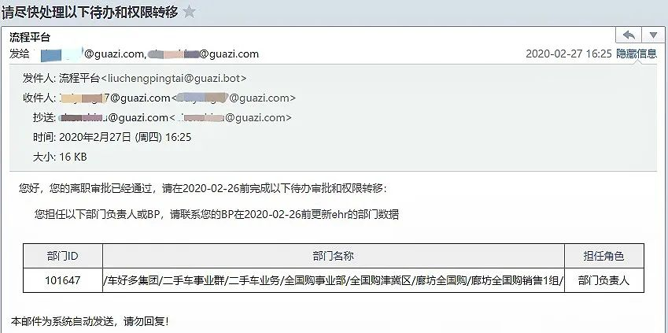
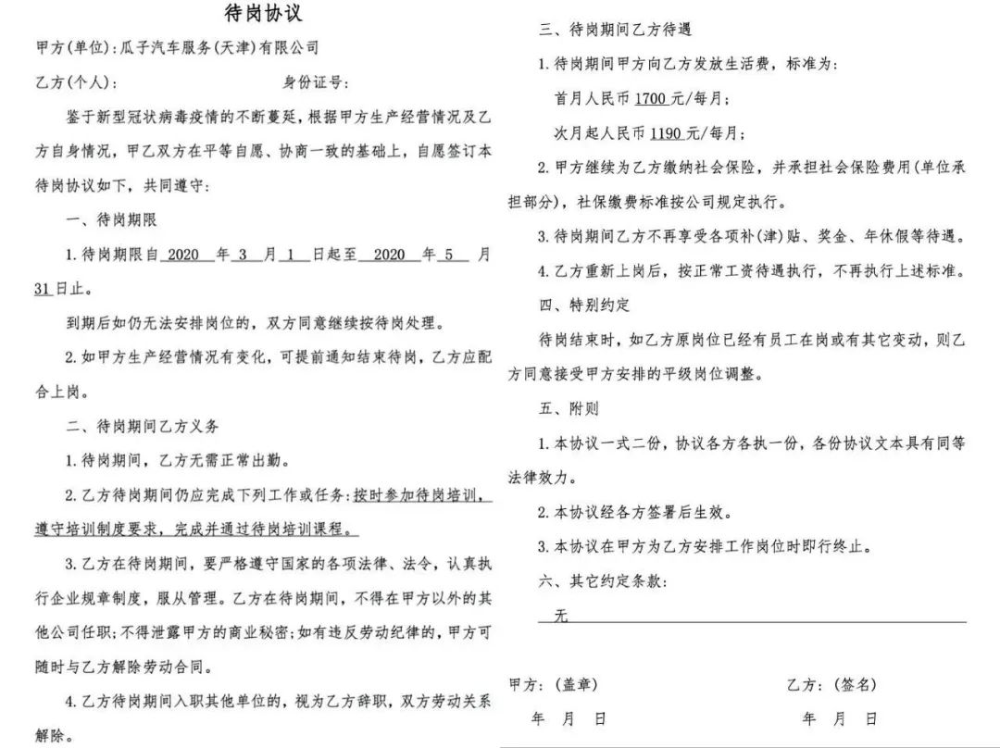
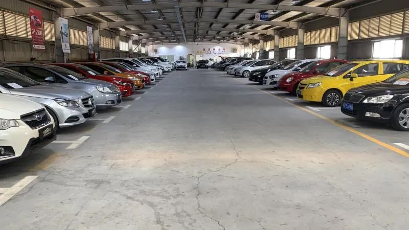

卖“问题口罩”、陷降薪风波，名创优品的疫情之困
原文链接 备份链接 燃财经（ID:rancaijing）原创 作者 | 唐亚华 编辑 | 魏佳 疫情横扫，线下零售业态一片萧条。 快时尚连锁品牌名创优品在2月经历了关掉一半以上门店、收入下降95%的危局。于是名创优品开始降薪、新增口罩类 …

年刚过完，宅在河北廊坊家中的白洋就经历了一场为期10天的离职拉锯战。
他本是瓜子二手车廊坊地区的销售主管，从被劝说主动辞职，到抹去一切在岗痕迹，强行“被离职”，10天里，他失望、委屈，又无能为力。
疫情让本就下行的二手车电商行业气候变得更加冷峻。瓜子、大搜车、优信等平台纷纷降薪、待岗，甚至掀起裁员潮。
被裁的员工生计成为愁事。白洋曾自称是“希望改变二手车行业现状的人”，如今他选择去工厂做夜班日结工，从晚8点干到早8点，日结220元工资——只有这样的快钱，才能补上每天开销的窟窿。
文 | 王雨娟 俞禾
编辑 | 萧祷
运营 | 肖睿
裁员

解聘。不是降薪调岗、不是降职，而是直接解聘。白洋完全没有想到，会是这样的结果。
30岁的白洋在瓜子二手车廊坊分店工作， 2月17日下午，像过去半个月一样，他正在家中远程办公。——一月底以来，他几乎没见过外人，然而这一天，却意外地迎来了销售经理。
小区尚在封闭，二人在车中短暂会面。销售经理开门见山，“公司要裁员，进行人员优化。”他并不打算拐弯抹角，“你们整组都裁了。”辞退原因是组内人员流失率高，且业绩垫底。
“挺意外的，挺心寒的，我付出这么多了。”白洋并不认同瓜子给出的这两个理由，他去年11月才到瓜子，任廊坊“全国购”项目销售1组的负责人。他觉得入职前后员工的离职与自己没有关系。而年前的12月，白洋整组的业绩总项完成率是113.96%，这也让他一度觉得，裁员不会落到自己头上。
车上开着暖风，白洋的心却有如寒冰。销售经理劝白洋主动离职，这样工资可以结算到2月3日，不包含2月3日至17日的远程办公期。而如果拒不主动离职，瓜子也许会将白洋挂上阳光诚信联盟——这意味着他会被列入员工失信名单，共享给联盟中的几百家企业。
“这么大的公司，这么处理员工，应该是有什么地方搞错了。”白洋觉得其中一定有什么误会，甚至一度怀疑有人从中作梗。
他是个理性而克制的人。三十而立，濒临失业于他虽是考验，却也没有在日常生活中留下太多痕迹。“要瞒着父母嘛，怕他们担心。”远程办公也让他看起来与往日无异，焦急和不甘只在心底。唯一没有控制好的一次，是与销售经理对话时，情绪一时上头，便对着经理“口吐芬芳”。
然而，经理也不过是上传下达。确定协商无果后，白洋下意识地搜集了不少证据和录音，希望能与公司沟通，保住自己的工作，可后续的交涉却让他越来越心寒。2月19日，白洋所在的廊坊瓜子微信群解散。2月20日，事件稍微有了些进展，HRBP告诉白洋，只要他主动离职，便可得到10-15天的优待——不用干活，月底薪资照发。
可白洋对这套话术已经免疫，“HRBP就是开人来的，带有极强的目的性，说白了就是命令式的。”他再次拒绝了主动离职的要求，并分别向瓜子所属的车好多集团CEO和公司廉政部去信，希望内部调查自己的情况，而CEO没有回复，廉政部称不在职责范围内。
十天之后，2月27日，白洋收到了一封离职审批通过书，请他办理权限转移。他不知道是谁给自己办理了离职，起初抱有的关于“误会”的幻想破灭了，只剩下“伤心，然后失望”。

▲白洋收到的邮件，要求他办理权限转移。图 / 受访者提供
落差
梦想是白洋进入二手车电商行业的关键词，他曾认真地想用后半生为之奋斗。
从一家共享汽车公司的城市经理岗位离职后，去年11月，他又放弃薪水高出30%的另一纸offer——一家被视为“黑马”的连锁酒店城市经理，来到瓜子。
相比酒店行业，二手车市场更让白洋兴奋。2019年，全国二手车累计交易1492.28万辆，同比增长7.96%，而在之前的三年里，二手车交易量增速都在10%以上。平稳上涨的市场，被看作是一个市值高达万亿的盘子。在白洋的判断里，国内二手车交易市场还会继续膨胀，而买家的消费观念正在革新，电商也许是个不错的入口。

▲2016—2018年，全国二手车累计交易量增速均超过10%。图 / 中国产业信息网
以往，二手车市场被看作“水很深”，门道多、门槛高、手续费高，再加上“一车一况”，想买到一辆心仪的二手车，不出点血、花上几周甚至更长的时间成本，很难。白洋认为，如果二手车电商可以专业、全面、平价且透明，原本习惯线下购车的消费者，也许可以慢慢接受线上消费的方式，瓜子这样的公司必有惊人的前景。
2019年年初，瓜子二手车的母公司车好多集团得到15亿美元融资，这是二手车电商企业迄今为止最大的一笔融资。再加上瓜子在2018年开起了数百家线下严选店，一家店里多的时候有几十台车供挑选，这种由轻模式转向重模式的举动，似乎说明着，瓜子占有的盘子越来越大，离“行业领军者”越来越近。
进入二手车行业，又加入互联网大潮，一度让白洋看到职业生涯的曙光。可落差几乎在入行的同时产生。他所在的“全国购”项目1组，是将业务较差、自由散漫的销售集中起来组建的，“不像团队像团伙”。他花了很大的力气，才将团队带起来。
脉脉职言上也充斥着同事们的抱怨。年会很潦草，加班太常见了——可公司认为这是由于员工的任务没有完成，并不支付额外的薪资。没有加班费，没有年终奖，福利也差。甚至，白洋在翻阅信息的时候发现，瓜子存在的多起民事纠纷案件中，占比最高的是与劳动者的官司。
这次裁员潮也并非没有征兆。白洋记得，1月份，严选店项目被瓜子“全国购”兼并，同时在一些城市开放“全国购”销售代理。

▲瓜子二手车严选直卖店。图 / 网络
此举也许是要回归电商赋能的本质，在线下市场减少布局，可瓜子一名区域负责人称，“全国购”需要公司对行业全链条的把握，“前端消费者到后端供应链，如果跑不通就是黑洞。”该区域负责人认为，瓜子和车商没有太多的合作积累，物流等供应链能力又缺乏，尽管靠堆广告做出一定销量，也很难顺遂。
对于瓜子的员工而言，兼并后，所有严选销售岗取消，转岗到“全国购”做销售。开放代理，更是加大了销售的外部竞争压力。这造成订单断崖式下降。去年11月，白洋组内的一个销售，平均一天可以接20个线索，工作时间安排得满满当当，但1月以后，一天才有3至5个，甚至有时只有1个，“狼多肉少了”。
而除此之外，“全国购”号称不赚差价，所售车源均来自个人卖家，卖家售车价即为买家购车价，公司的盈利和销售的佣金都多少会受到影响。
白洋嗅到人员优化的气味，还告知同事：只要把手里的工作做好，别人就不会说你。公司后续肯定有筛选。
“但没想到，连我都带上。”
寒冬
得到经理的当面劝说，算是身为主管的优待，“我手下的组员很多直接就电话辞退了。”白洋说。
他并非孤例，仅瓜子员工维权五群，就有397名成员。
在河南濮阳市的销售主管刘鹍亲自操作过裁员，那是今年1月份。他并不清楚每位员工被裁的具体理由，只是听命办事，劝员工主动离职，这样“还能够拿最后一个月的工资”。
没有想到的是，仅一个月后，裁员的对象就成为自己。2月14日，他在微信上收到消息，听命办事者轮到经理，理由也是“公司安排”。沟通无果，15天后，他收到辞退函。
扬州的销售陈志慧已经怀孕4个多月，春节那几天，她就不断收到离职劝说。
3月10日，她收到瓜子的2月待岗工资，共1012元，不到扬州最低工资标准的二分之一。
除了直接裁员，瓜子被降薪待岗的员工数量更多。金融专员甘开晶在一封举报信中写道，3月9日，他在不接受待岗与离职的情况下，个人信息被调整为待岗。
次日，他在瓜子彻底“被消失”——内部系统和VPN全部被关闭，同时收到实发工资1600元，不足正常薪资的四分之一。5天后，他收到待岗通知函，公司要求待岗期间不得去其他任何地方任职，必须每周接受培训及考试，否则公司有权解除劳动合同。
在一封回复给每日人物的信函中，上述瓜子区域负责人坦言，仅开年1月份，公司就裁了2000多人。而裁员风波，自2019年9月份就开始。该区域负责人称，瓜子一直以来的裁员政策都是鼓励员工主动辞职。1月时的主要方式是强制开除，不给赔偿，HR直接邮寄解除劳动合同通知书。
到2月下旬，疫情期间，改成了待岗策略。“直接强开，社会舆论影响太大了，公司也赔不起。转成待岗，之后慢慢处理。”

▲瓜子二手车的待岗协议。图 / 网络
疫情自然是降薪和裁员的导火索，但实际上，它只是改变了下行的斜率，疫情之前，二手车行业已经步履蹒跚。
据过往资料，多位投资人曾表示，自2018年起，二手车电商行业逐渐进入资本寒冬，公司裁员与业务规模缩减是资金短缺企业难以避免的动作。人人车裁员自2018年底开始，次年就被冠以“破灭的乌托邦”。有着“二手车电商第一股”称号的优信在流血上市后，去年年中，有媒体爆出为了剥离汽车金融业务，优信正大规模裁员，每个部门都有涉及。
尽管二手车市场每年都有令人瞩目的增长，但是电商一直没有找到根本盈利之道，动辄数亿的投资有不少花在了“广告战”上，互相之间拼流量拼得头破血流。相比之下， 二手车传统企业有着多年经验积累、资源和销售能力，这些都让电商一时追赶不上。
可2月份遭遇疫情，不仅是电商，整个二手车行业也瞬间冰封。据中国汽车流通协会统计，2020年2月，全国二手车市场交易量仅为7.11万辆，交易量环比下降92.78%，月度同比下降91.19%，交易金额为43.58亿元。
车好多集团CEO杨浩涌此前表示，在寒冬背景下，人员优化是降本增效的最佳行为，“企业终究是要盈利的，作为头部企业，更需要在冬天多储备点粮食。”

▲受疫情影响，整个二手车市场都被“冰封”。图 / 受访者提供
妥协与斗争
行业内的不同企业，应对寒冬的措施不一，但都存在降薪、待岗的现象。
大搜车的员工猴子收到裁员的邮件之前，没有任何通知，后来也未看到除“正常裁员”之外的理由。“公司发的是解除劳动合同协议，给予N+1的补偿，签字后属于协商完成。”
猴子没有同意签字，但不签字就没有赔偿，他气愤地在微博发文，却“不予显示”。
胡越在优信做内勤。疫情开始后，优信通知部分员工待岗，按照各地最低月生活标准发放工资。除此之外，还有一封内部信传出：部分一般员工与高管被降薪，最少减幅是在20%，最高的减幅将近40%，“该规定暂实行至今年5月31日。”
遭遇裁员后，妥协与斗争同时在这群人身上上演着。
在给CEO杨浩涌的邮件中，白洋自称是“希望改变二手车行业现状的人”，如今也不得不接受现实。没有存款，生计成为愁事。他日常开销不大，可1年前投资失败，折进去30万，到现在还有5万元债务没还清。
钱得来得快，才能补上每月还款的窟窿。他选择去做日结工，在廊坊，工人的薪资标准是一小时22元。从晚上8点到第二天早上8点，抛开吃饭时间，白洋每天能干10小时，第二天就能结220元工钱。
一个月干满无休是6600元，还不到在瓜子收入的一半，可这也是他和几个朋友跑了3天才拿到的岗位——特殊时期管得严，从小区到工厂，每一道关卡都需要通行证。
“我要是20岁出头遇到这个事，根本就不在乎，下一步就找（工作）了。”30岁的他无疑承担着更多。
他的心态也不似前几年：初入社会，失败了爬起来就是，但现在不同，他自以为能胜任又付出心血的事业，却不得善终，被瓜子“主动离职”的经历也可能成为污点，总是意难平。
陈志慧也看到更大的危机。她和丈夫原本打算有一定积蓄再要孩子，没想到意外怀孕，小生命提前到来。
被裁员后，她的五险一金和生育津贴没了，丈夫收入也并不稳定，怀孕后花销猛增，小两口常常要靠双方父母的补贴。
劳动仲裁是大部分被裁员工都想到的维权方式。白洋试过申请，可廊坊市要等疫情结束才能受理。阻挡陈志慧的则是劳动合同，公司曾承诺通过邮件发送电子版，可等到内部系统被关停、工作手机被收回，她也没有收到，“只有一张以前调任转岗时的入职通知”。刘鹍手中还有瓜子的股权，可他没有主动离职，属于被动离开，股权直接作废，没有补偿。
3月的下午，上海春风和煦，原本是交易红火的时间段，但二手车市场门口并无一人光顾。
大部分员工待岗或是失业在家，也有人寻求各种方式，发起维权运动。13日，白洋在朋友圈中写道：“保持沉默是懦弱。”
（文中胡越、猴子为化名，罗辑对此文亦有帮助）
每人互动
疫情结束后，你会考虑买二手车吗？
文章为每日人物原创
侵权必究


每人作者
长按二维码向我转账
受苹果公司新规定影响，微信 iOS 版的赞赏功能被关闭，可通过二维码转账支持公众号。
文章已于修改
原文链接 备份链接 燃财经（ID:rancaijing）原创 作者 | 唐亚华 编辑 | 魏佳 疫情横扫，线下零售业态一片萧条。 快时尚连锁品牌名创优品在2月经历了关掉一半以上门店、收入下降95%的危局。于是名创优品开始降薪、新增口罩类 …
原文链接 备份链接 以下文章来源于燃财经 ，作者燃财经工作室 最残忍的是，“这场仗我没打下来是死，打下来说不定也是死。” 文 | 黎明 编辑 | 阿伦 运营 | 肖睿 疫情当前，危机四伏，不少中小企业都将裁员提上了日程。但裁员不当，却可 …
原文链接 备份链接 学会和疫情相处，在疫情下生存 将是我们不得不接受的选择 新冠特刊系列3「准备复工」 点击下图，线上购买 点击上图，下单新刊「*准备复工*」 主笔 | 谢九 新冠肺炎爆发一个月之后，逐渐度过了最恐慌无序的阶段，2 …
原文链接 备份链接 《创新经济战疫计划》，是燃财经在新型肺炎疫情期间推出的特别栏目，关注创新经济企业遇到的新难题、商讨应该采取的新对策，希望能够帮助中小企业一起战胜挑战、把握机会。 作者 | 黎明 编辑 | 阿伦 疫情当前，危机四伏，不少 …
原文链接 备份链接 《创新经济战疫计划》，是燃财经在新型肺炎疫情期间推出的特别栏目，关注创新经济企业遇到的新难题、商讨应该采取的新对策，希望能够帮助中小企业一起战胜挑战、把握机会。 作者 | 闫丽娇 编辑 | 周昶帆 刚刚过去的2月15 …